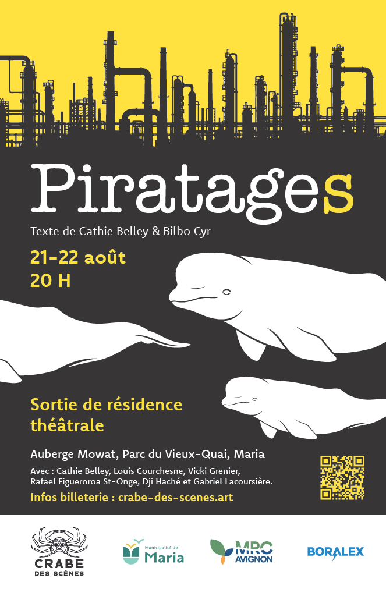

Une intervention théâtrale qui explore notre rapport au territoire, aux ressources et à l’avenir collectif.
- Dates
- 21 et 22 août
- Lieu
- Auberge Mowatt, Maria
- Format
- Théâtre documentaire
Troupe de théâtre de création
Le théâtre rassemble les voix, transforme les lieux et fait surgir des mondes là où l’on ne voyait qu’une scène vide.
21 et 22 août
Un texte de Cathie Belley et Bilbo Cyr

Une intervention théâtrale qui explore notre rapport au territoire, aux ressources et à l’avenir collectif.
Notre démarche
Faire émerger des récits contemporains ancrés dans les réalités d’ici.
Expérimenter des formes scéniques libres et surprenantes.
Créer un espace où artistes et spectateurs se rassemblent.
Crabe des Scènes
Des artistes de la Baie-des-Chaleurs et de la grande ville se regroupent autour d’un théâtre d’intervention à portée environnementale.
La troupe souhaite rendre l’art accessible, intégrer la communauté et créer des expériences culturelles vivantes, participatives et spectaculaires.
Découvrir La TroupeIls rendent nos projets possibles
Ce projet est rendu possible grâce à l’appui et à la collaboration de partenaires qui contribuent à faire vivre la création théâtrale dans notre région.